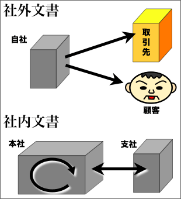
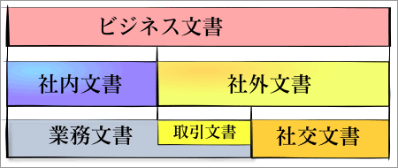
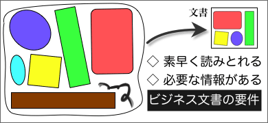

ビジネス文書の種類と要件
ビジネス文書とは、どのようなものだろうか。ビジネス文書の種類やビジネス文書の要件について考えてみよう。
ビジネス文書とは？
ビジネス文書とは、ビジネスのために仕事のなかで作成される様々な文書のことをいう。手書きや印刷された書類（紙の文書）だけでなく、電子メールやデジタル・プレゼンテーションのファイルなどの電子文書も含まれる。
ビジネス文書の種類
ビジネス文書は、大きく社内文書（社内向け文書）と社外文書（社外向け文書）とに分けることができる。

社内文書（社内向け文書）とは、社内で情報の伝達や共有のために使われる文書のことである。企画書・計画書や報告書、会議資料や議事録、業務に関する記録文書、社内の部署や本店・支店間などの通知書や指示・連絡文書などが含まれる。
社外文書（社外向け文書）とは、情報の伝達や共有を目的として社外（取引先や顧客など）に向けて発信された（公式な）文書のことである。挨拶状、祝い状、案内状、招待状、依頼状、礼状、契約書、注文書、申込書などが含まれる。
業務文書と社交文書
ビジネス文書は、送り先に応じて社内文書と社外文書とに分けられるほか、目的・用途によって業務文書と社交文書に分けることができる。

業務文書とは、日常的な業務を遂行するうえで作成される文書のことである。社内文書は、基本的にすべて業務文書である。また、社外文書でも契約書、注文書など業務に直接関係する文書は業務文書である。なお、これらの社外文書を取引文書と呼ぶ場合もある。
一方、挨拶状や祝い状など、儀礼的な文書は社交文書と呼ばれる。社交文書は、業務に直接関係するものではないが、人間関係を円滑にするうえで重要なものと考えられている。
ビジネス文書の要件
ビジネス文書では、相手を感動させたり感心させたりする必要はない。ビジネス文書で大切なのは、《文書の形式》と《情報の内容》である。

文書の形式
ビジネス文書では、文書の形式を整えることが重要である。一定の形式に従った文書は、情報の伝達や整理の効率が良いからである。ここで情報の伝達の効率が良いというのは、『素早く読みとることができる』ということである。
素早く読みとることができる文書は、次のような性質を持つものと考えることができる。
- すぐに全体が把握できる
⇒ 〔構成が整えられている〕
- 文章が順序通りに読める
⇒ 〔表現が整えられている〕
- 全体が適当な分量である
⇒ 〔体裁が整えられている〕
これらの形式を整えることによって、素早く読みとることができる文書をつくることができるわけである。
また、形式が整った文書は、整理したり保管したりするときにも便利である。文書に限らず、同じ形のものは整理しやすいし、整理しやすいものは保管もしやすいのである。
情報の内容
ビジネス文書では、情報の内容を選ぶことも重要である。ビジネス文書は、社内や社外との情報の伝達や共有を目的とするものであるから、必要な情報が含まれていなければならないということである。
ここで、「必要な情報」とは、次のようなものである。
- 読み手が知りたいと思っている情報
⇒ 〔情報の共有〕
- 読み手が知らなければならない情報
⇒ 〔情報の伝達〕